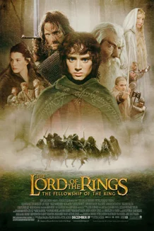

Explore film ↗The Lord of the Rings: The Fellowship of the Ring
Peter Jackson
THE ARCHIVE / 066
2011 · United States · Fantasy
A film by Woody Allen
A visiting screenwriter discovers a route into an idealised Paris of the past and begins to question his nostalgia.
Saved automatically in this browser. Ratings are your own, not critic scores.
Film reference: Source information ↗
Synopsis: original FRAME summary. Genre and displayed production country: concise editorial classifications; international co-productions may include additional countries.